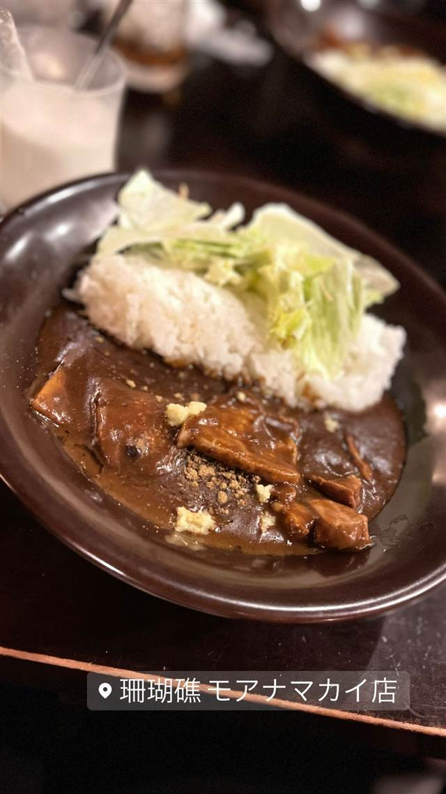

Curry&herb Cherry blossom（カレー＆ハーブ チェリーブロッサム）新百合丘店
動物油を使わず36種以上のハーブで仕立てた無油カレー
カレー&ハーブ チェリーブロッ…
WHY GO
新百合ヶ丘駅前、エスカレーターの下という珍しい場所にある小さなカレー店。動物油を使わず30種以上のハーブと野菜で仕立てた無油カレーが評判で、食べログの百名店にも選ばれているという。
TRIVIA
豆知識
- 駅のエスカレーターの下という珍しい場所に店を構えている
- 店主がお見合いの仲人も兼ねているという逸話がある
REVIEWS
世間の評判
3.62食べログ
無油ヘルシーな36種のハーブカレー
- 油を使わない本格煮込みカレーの独特な味わいを評価する声が多い
- 愛想の良い店員さんとサービス精神旺盛な接客を評価する声がある
- 人気で行列覚悟になることが多いが平日なら並ばず入れるという声もある
- カウンター六席のみの小さな店でわかりづらい場所にあるという声もある
食べログ 口コミ527件
| 看板 | オリジナル欧風カレー |
|---|---|
| こだわり | 動物油・植物油を使わず、36〜38種類の自家配合ハーブと12種類の野菜・豆を使った無油カレーに仕上げている。 |
| 掲載・評価 | 食べログ「カレー EAST 百名店」選出とされる。 |
| どこから | 東京から1時間ほど |
| 行くなら | 行列 |
| 営業時間 | 月〜金 11:00-22:00 土 11:30-22:00 日 11:00-22:00 |
| 予算 | 昼 ¥1,000～¥1,999 夜 ¥2,000～¥2,999 |
| 定休日 | 不定休 |
| 場所 | 新百合ヶ丘 神奈川県川崎市麻生区上麻生 |
| メモ | 新百合ヶ丘駅南口すぐ、エスカレーター下の狭小スペースで席数はごくわずか。 |
食べたもの：カレー
NEARBY
近い店・同じ系統の店
-
 天ぷら・天丼 新百合ヶ丘
蕎膳 楽
つなぎに海藻を使う新潟郷土料理、コシの強いへぎそば
昼 ¥1,000～¥1,999 夜 ¥1,000～¥1,999
天ぷら・天丼 新百合ヶ丘
蕎膳 楽
つなぎに海藻を使う新潟郷土料理、コシの強いへぎそば
昼 ¥1,000～¥1,999 夜 ¥1,000～¥1,999
-
 カレー 代官山
代官山 ハブモアカレー（HAVE MORE CURRY）
草枕で修業した店主が磨く野菜とスパイスのカレー
昼 ¥1,000～¥1,999 夜 ¥1,000～¥1,999
カレー 代官山
代官山 ハブモアカレー（HAVE MORE CURRY）
草枕で修業した店主が磨く野菜とスパイスのカレー
昼 ¥1,000～¥1,999 夜 ¥1,000～¥1,999
-
 カレー 神保町駅
スマトラカレー 共栄堂
1924年創業、小麦粉不使用で元祖スマトラカレーを今に伝える店
昼 ¥1,000～¥1,999 夜 ¥1,000～¥1,999
カレー 神保町駅
スマトラカレー 共栄堂
1924年創業、小麦粉不使用で元祖スマトラカレーを今に伝える店
昼 ¥1,000～¥1,999 夜 ¥1,000～¥1,999
-
 カレー 宮ノ下駅
富士屋ホテル
大正4年の現存最古カレーメニューから続く伝統のビーフカレーを出す宿
昼 ¥8,000～¥9,999 夜 ¥15,000～¥19,999
カレー 宮ノ下駅
富士屋ホテル
大正4年の現存最古カレーメニューから続く伝統のビーフカレーを出す宿
昼 ¥8,000～¥9,999 夜 ¥15,000～¥19,999
-

カレー 江ノ電七里ヶ浜駅 珊瑚礁 モアナマカイ店 50年以上変わらぬ乳製品たっぷりのまろやかなカレー 昼 ¥1,000～¥1,999 夜 ¥2,000～¥2,999 -
 カレー 広尾
広尾のカレー
牛テールと牛骨を6時間煮込んだルーの牛テールカレー
昼 ¥1,000～¥1,999 夜 ¥1,000～¥1,999
カレー 広尾
広尾のカレー
牛テールと牛骨を6時間煮込んだルーの牛テールカレー
昼 ¥1,000～¥1,999 夜 ¥1,000～¥1,999